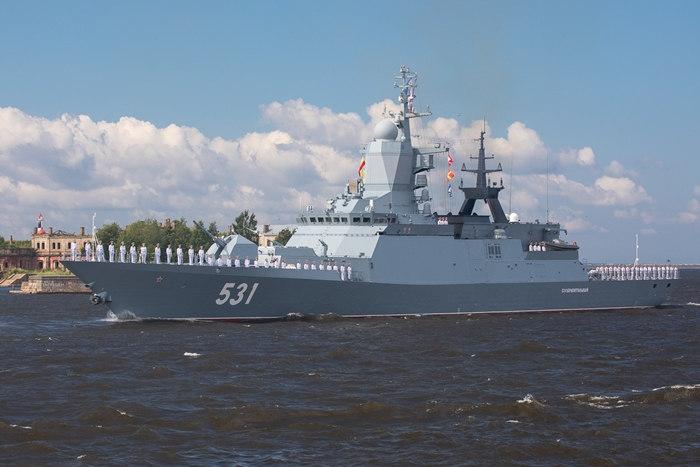

Сообразительный
Корвет в составе Балтийского флота. Есть радиолокационное, радиоэлектронное вооружение,
артиллерийское, зенитное и ракетное. Торпедные аппараты для борьбы с подлодками и
авиационная группа.
Содержание
Конструкция
- Длина: 104,5 м. (наибольшая)
- Ширина: 13 м. (по ватерлинии)
- Осадка: 7,95 м (по носовому бульбу)
- Водоизмещение стандартное: 1800 тонн.
- Водоизмещение полное: 2250 тонн.
- Скорость: 27 узла (50 км/час).
- Автономность плавания — 15 суток.
- Экипаж крейсера — 400 человек (14 офицеров).
- Length: 104,5 m. (largest)
- Width: 13 m. (along the waterline)
- Draft: 7,95 m (on the nasal bulb)
- Standard displacement: 1800 tons.
- Full displacement: 2250 tons.
- Speed: 27 knots (50 km/h).
- The autonomy of navigation is 15 days.
- The crew of the cruiser is 400 people (14 officers).
История создания
Заложен на стапеле Северной верфи 20 мая 2003 года.
Спущен на воду 31 марта 2010 года в Санкт-Петербурге.
11 июля 2011 года совершил пробный выход в море, для проведения ходовых испытаний. 14 октября 2011 года передан Министерству обороны Российской Федерации. Стоимость корвета составила 10 млрд рублей.
12 октября 2011 года святейший патриарх Московский и всея Руси Кирилл освятил походный воинский храм (иконостас) во имя святого апостола Андрея Первозванного для корвета «Сообразительный» Балтийского флота по заказу регионального благотворительного общественного Фонда помощи ветеранам и инвалидам силовых структур «Омофор». Церемония проходила на площади перед собором св. Александра Невского в Балтийске (Калининградская обл.).
29 июля 2012 года Приказом Главнокомандующего ВМФ России № 64 от 1 марта 2012 года корвету «Сообразительный» присвоено почётное наименование «гвардейский». Торжественная церемония вручения и подъёма гвардейского военно-морского флага на борту «Сообразительного» прошла в Балтийске, сразу после окончания морского парада в День ВМФ. Гвардейское звание унаследовано от одноимённых предшественников корабля в ВМФ СССР: большого противолодочного корабля Черноморского флота проекта 61, а до него — эсминца Черноморского флота проекта 7-У, которому гвардейское звание было присвоено во время Великой Отечественной войны 1 марта 1943 года. Герой Советского Союза старший матрос В. В. Ходырев навечно зачислен в состав экипажа.
Спущен на воду 31 марта 2010 года в Санкт-Петербурге.
11 июля 2011 года совершил пробный выход в море, для проведения ходовых испытаний. 14 октября 2011 года передан Министерству обороны Российской Федерации. Стоимость корвета составила 10 млрд рублей.
12 октября 2011 года святейший патриарх Московский и всея Руси Кирилл освятил походный воинский храм (иконостас) во имя святого апостола Андрея Первозванного для корвета «Сообразительный» Балтийского флота по заказу регионального благотворительного общественного Фонда помощи ветеранам и инвалидам силовых структур «Омофор». Церемония проходила на площади перед собором св. Александра Невского в Балтийске (Калининградская обл.).
29 июля 2012 года Приказом Главнокомандующего ВМФ России № 64 от 1 марта 2012 года корвету «Сообразительный» присвоено почётное наименование «гвардейский». Торжественная церемония вручения и подъёма гвардейского военно-морского флага на борту «Сообразительного» прошла в Балтийске, сразу после окончания морского парада в День ВМФ. Гвардейское звание унаследовано от одноимённых предшественников корабля в ВМФ СССР: большого противолодочного корабля Черноморского флота проекта 61, а до него — эсминца Черноморского флота проекта 7-У, которому гвардейское звание было присвоено во время Великой Отечественной войны 1 марта 1943 года. Герой Советского Союза старший матрос В. В. Ходырев навечно зачислен в состав экипажа.
Laid down on the slipway of the Northern Shipyard on May 20, 2003.
Launched on March 31, 2010 in St. Petersburg.
On July 11, 2011, he made a trial trip to sea to conduct sea trials. On October 14, 2011, it was transferred to the Ministry of Defense of the Russian Federation. The cost of the corvette was 10 billion rubles.
On October 12, 2011, His Holiness Patriarch Kirill of Moscow and All Russia consecrated a military temple (iconostasis) in the name of St. Andrew the First-Called for the corvette "Smart" of the Baltic Fleet by order of the regional charitable public Fund for veterans and Disabled law enforcement agencies "Omophor". The ceremony took place on the square in front of the Cathedral of St. Alexander Nevsky in Baltiysk (Kaliningrad region).
On July 29, 2012, by Order of the Commander-in-Chief of the Russian Navy No. 64 dated March 1, 2012, the corvette "Savvy" was awarded the honorary name "Guards". The solemn ceremony of handing over and raising the Guards naval flag on board the "Savvy" was held in Baltiysk, immediately after the end of the naval parade on the Day of the Navy. The Guards rank was inherited from the ship's predecessors of the same name in the USSR Navy: the large anti-submarine ship of the Black Sea Fleet Project 61, and before it - the destroyer of the Black Sea Fleet Project 7-U, to which the guards rank was awarded during the Great Patriotic War on March 1, 1943. Hero of the Soviet Union senior sailor V. V. Khodyrev is permanently enrolled in the crew.
Launched on March 31, 2010 in St. Petersburg.
On July 11, 2011, he made a trial trip to sea to conduct sea trials. On October 14, 2011, it was transferred to the Ministry of Defense of the Russian Federation. The cost of the corvette was 10 billion rubles.
On October 12, 2011, His Holiness Patriarch Kirill of Moscow and All Russia consecrated a military temple (iconostasis) in the name of St. Andrew the First-Called for the corvette "Smart" of the Baltic Fleet by order of the regional charitable public Fund for veterans and Disabled law enforcement agencies "Omophor". The ceremony took place on the square in front of the Cathedral of St. Alexander Nevsky in Baltiysk (Kaliningrad region).
On July 29, 2012, by Order of the Commander-in-Chief of the Russian Navy No. 64 dated March 1, 2012, the corvette "Savvy" was awarded the honorary name "Guards". The solemn ceremony of handing over and raising the Guards naval flag on board the "Savvy" was held in Baltiysk, immediately after the end of the naval parade on the Day of the Navy. The Guards rank was inherited from the ship's predecessors of the same name in the USSR Navy: the large anti-submarine ship of the Black Sea Fleet Project 61, and before it - the destroyer of the Black Sea Fleet Project 7-U, to which the guards rank was awarded during the Great Patriotic War on March 1, 1943. Hero of the Soviet Union senior sailor V. V. Khodyrev is permanently enrolled in the crew.